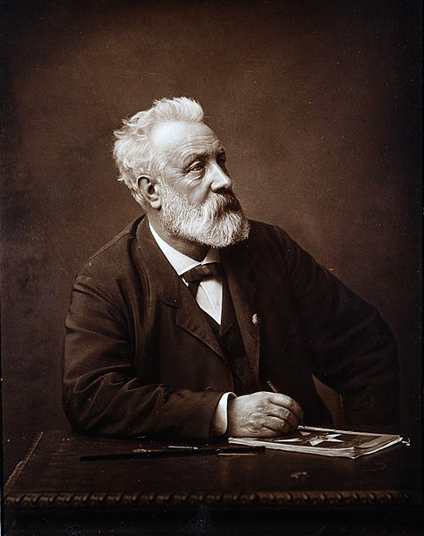
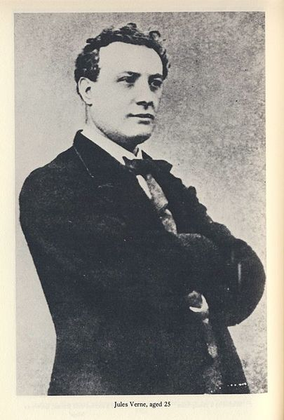
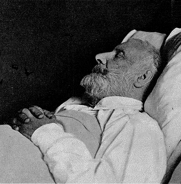
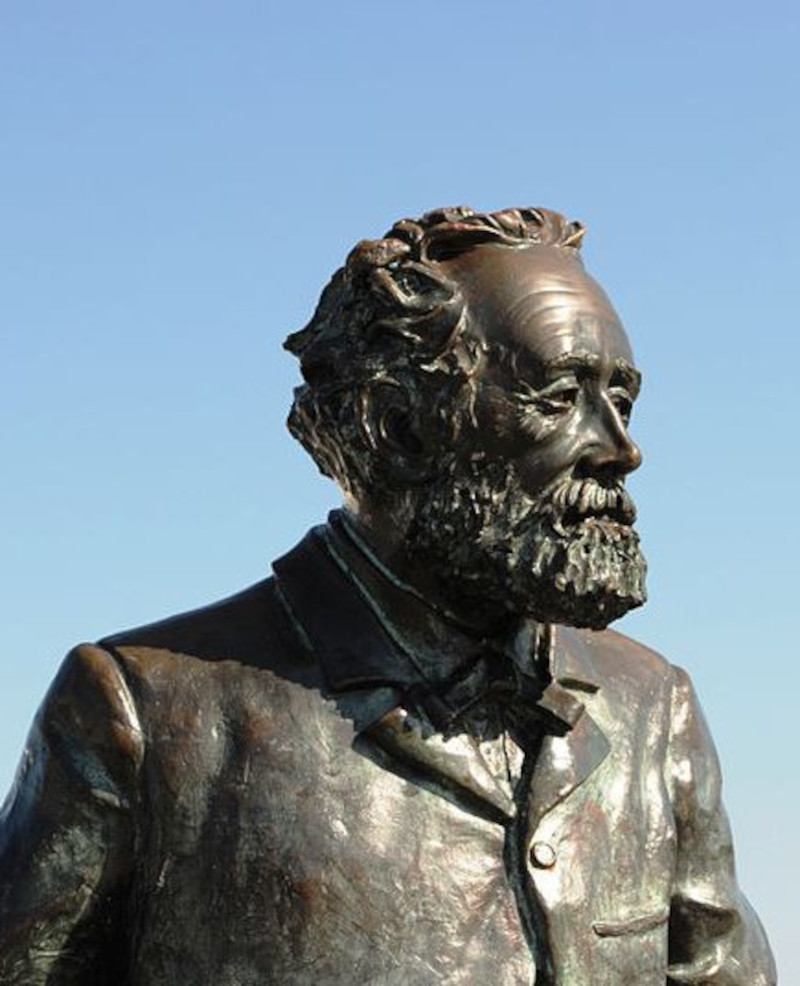

Jules Gabriel Verne, conocido en los países hispanohablantes como Julio Verne (Nantes, 8 de febrero de
1828-Amiens, 24 de marzo de 1905), fue un escritor, poeta y dramaturgo francés célebre por sus novelas de
aventuras y por su profunda influencia en el género literario de la ciencia ficción.
Nacido en una familia burguesa, estudió para continuar los pasos de su padre como abogado, pero muy joven
decidió abandonar ese camino para dedicarse a la literatura. Su colaboración con el editor Pierre-Jules
Hetzel
dio como fruto la creación de Viajes extraordinarios, una popular serie de novelas de aventuras
escrupulosamente
documentadas y visionarias entre las que se incluían las famosas Cinco semanas en globo (1863), Viaje al
centro de la Tierra (1864), De la Tierra a la Luna (1865), Veinte mil leguas de viaje submarino (1870), La
vuelta al mundo en ochenta días (1872) o La isla misteriosa (1874).
Es uno de los escritores más importantes de Francia y de toda Europa gracias a la evidente influencia de sus
libros en la literatura vanguardista y el surrealismo, y desde 1979 es el segundo autor más traducido en el
mundo, después de Agatha Christie.Se le considera, junto con H. G. Wells, el «padre de la ciencia ficción».
Fue condecorado con la Legión de Honor por sus aportes a la educación y a la ciencia.




Infancia y juventud
Nació en el barrio Île Feydeau de Nantes, Francia, el 8 de febrero de 1828. Era el mayor de los cinco hijos
que tuvo el matrimonio formado por Pierre Verne, que procedía de una familia vinculada a la jurisprudencia (su
abuelo fue consejero notario de Luis XV y presidente del Colegio de Abogados de Nantes), y de Sophie Allotte
de la Fuÿe, perteneciente a una familia de militares. Su hermano Paul nació un año después de él, y sus tres
hermanas, años más tarde: Anna, en 1837; Mathilde, en 1839, y Marie, en 1842. En 1839 ingresa en el colegio
Saint-Stanislas donde demuestra su talento en geografía, griego, latín y canto. Cuando terminó su primer ciclo
de estudios su padre, Pierre Verne, le regaló a él y a su hermano, Paul, un foque de vela con el que planearon
descender por el Loira hasta el mar; sin embargo, Julio declinó al momento de emprender la aventura ya que no
había sido suficiente la planificación del viaje.
Muchos biógrafos afirman que en 1839, a los once años, se escapó de casa para ser grumete en un mercante que
viajaba a India llamado Coralie, con la intención de comprar un collar de perlas para su prima Caroline (de
quien estaba enamorado), pero su padre alcanzó el barco y bajó a Julio. Y desde allí empezó a escribir
historias, pero realmente el interés por escribir se le da cuando una maestra le cuenta anécdotas de su marido
marinero. Verne estaba interesado en la poesía y la ciencia. Leía y coleccionaba artículos científicos,
demostrando una curiosidad casi enfermiza que le duraría toda la vida. En 1846 regresa del Liceo Real de
Nantes con un alto promedio; probablemente gana un premio de geografía.
En 1847 comenzó sus estudios de derecho en París. Su prima Caroline se compromete. Escribe una obra de
teatro: Alejandro VI. En 1848 fue introducido por su tío Francisque de Chatêaubourg en los círculos
literarios, donde conoció a los Dumas, padre e hijo; el primero tendrá gran influencia personal y literaria en
Verne. En 1849 obtiene el título de abogado y su padre le permite permanecer en París. Sigue escribiendo
teatro. Su padre quiso que se dedicara a su carrera en la abogacía, pero él no estaba por esa labor y su
padre, enfadado con él, dejó de financiarle. Además, todos sus ahorros los gastó en libros, mientras pasaba
largas horas en las bibliotecas de París queriendo saberlo todo. Verne apenas tenía dinero para poder
alimentarse, lo que se piensa le causó incontinencia intestinal, parálisis facial, además de padecer diabetes.
Los Viajes extraordinarios
En 1859 viaja a Escocia con su amigo Hignard. Su primera obra de ficción científica es también la primera novela que escribió, París en el siglo XX, y una de las pocas que no publicó en vida —se imprimió en 1994—; Pierre-Jules Hetzel, su editor, rechazó la novela por el pesimismo que encerraba, pues presagiaba una sociedad en que la gente vive obsesionada con el dinero y con los faxes. Julio Verne publicó en 1863 el primero de sus sesenta Viajes extraordinarios, Cinco semanas en globo. La serie, prolongada durante casi 40 años, habría de incluir entregas de la talla de Viaje al centro de la Tierra (1864), De la Tierra a la Luna (1865), Los hijos del capitán Grant (1867). En el año 1869 aparece publicada Veinte mil leguas de viaje submarino (1869) a la que seguirían La isla misteriosa (1874), La vuelta al mundo en 80 días (1873), Miguel Strogoff (1876) —la mejor coartada para quienes le consideran un reaccionario—, La esfinge de los hielos (1897) o El soberbio Orinoco (1898). Trabajador infatigable, cultiva, paralelamente a sus viajes, su primera vocación: dramaturgo, escribiendo y adaptando algunas piezas para la escena.
En 1861 logra reunir suficiente dinero para viajar a Noruega e Islandia con su mujer, pero ella no puede viajar por encontrarse embarazada. A su vuelta le recibe con su recién nacido hijo Michel Verne, único fruto del matrimonio.
En 1863 traba amistad con el aventurero, periodista y fotógrafo Nadar. Con él investiga los perfeccionamientos que se les podría hacer a unos aparatos volantes, los que describe en Cinco semanas en globo. Nadar lo recomienda a Hetzel, dueño del Magasin d’Éducation et de Récréation (’magazín de ilustración y recreo’), quien le publica la primera entrega del folletín. Debido al éxito de esta obra el dueño de la revista le ofrece un contrato por veinte años a veinte mil francos anuales (una pequeña fortuna para esa época). En 1863, a raíz del éxito de su tercera novela, viaja a Estados Unidos en un ciclo de conferencias con su hermano Paul Verne. Dos años después publica la historia de un viaje a la Luna en dos partes: De la Tierra a la Luna y Alrededor de la Luna. Uno de los personajes, el intrépido francés Michel Ardán —anagrama de Nadar— es un vivo retrato de su querido amigo. El otro, Impey Barbicane, está basado en el carácter del presidente estadounidense Abraham Lincoln, asesinado a principios de ese mismo año.
Existen varias similitudes con el primer verdadero viaje a la Luna, el del Apolo 8 en 1968: en la nave viajan tres astronautas, Estados Unidos es el promotor y productor de la hazaña, despegan desde el estado de Florida, escapan de la gravedad terrestre a 11 km por segundo, requieren de 150 horas de viaje para llegar a la Luna, no alunizan sino que orbitan varias veces alrededor del satélite, y luego regresan a la Tierra.
El día del estreno de su adaptación al teatro de La vuelta al mundo en ochenta días, Verne vivió la única experiencia de su existencia digna de sus personajes: insistió en revisar personalmente la canastilla que conduciría a Phileas Fogg y a su inseparable Passepartout a grupas de un elefante verdadero. La caída de una parte del escenario asustó al animal, que salió despavorido del teatro con el autor a cuestas, para recorrer el Boulevard des Capuchins hasta que el domador los alcanzó en las Tullerías.
En 1870 publica Veinte mil leguas de viaje submarino, novela en la que aparece la ría de Vigo, en relación con la batalla de Rande, librada entre españoles e ingleses durante la Guerra de Sucesión a inicios del siglo XVIII. En 1878 Julio Verne quiso conocer en persona este lugar y, a bordo de su yate Saint Michel III, puso rumbo a Vigo, donde permaneció del 1 al 4 de junio. Durante su estancia acudió a la procesión de la Victoria y a las fiestas de la Reconquista.
Sus últimos años
Cuando Verne tenía cincuenta y ocho años, en marzo de 1886, tiene lugar un trágico suceso: mientras caminaba de regreso a su casa, su sobrino Gastón, de veinticinco años, con quien mantenía una cordial relación, le disparó con un revólver, sin motivaciones claras. La primera bala no da en el blanco, pero la segunda le hirió en la pierna izquierda, provocándole una cojera de la que no se recuperó. El incidente fue ocultado por la prensa y Gastón pasó el resto de su vida internado en un manicomio.
Tras las muertes de Hetzel y de su madre en 1887, Julio comenzó a escribir obras más sombrías. En parte esto pudo deberse a cambios operados en su personalidad, pero un factor importante fue el hecho de que el hijo de Hetzel, que continuó al frente de la empresa de su padre, no era tan riguroso en las correcciones como lo había sido aquel. Se dice que algunas veces, de tantas horas trabajando para sus obras, tuvo parálisis faciales.
El 24 de marzo de 1905, enfermo de diabetes desde hacía años, Verne murió en su hogar, sita en el bulevar Longueville 44 (actualmente bulevar Julio Verne). Fue enterrado en el cementerio de La Madeleine, ubicado al noroeste de Amiens, en cuya tumba se representa a Verne emergiendo del sepulcro, obra del escultor Albert Roze.